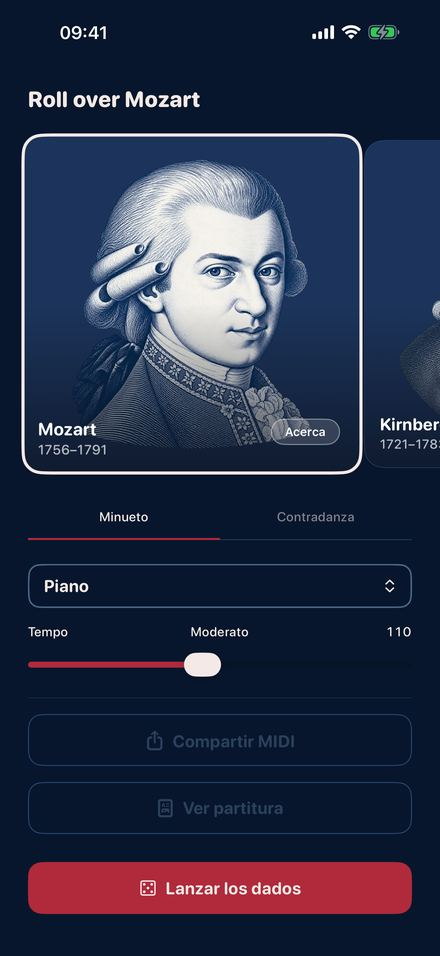
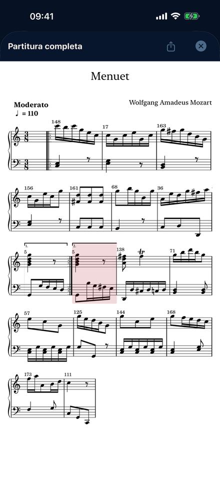
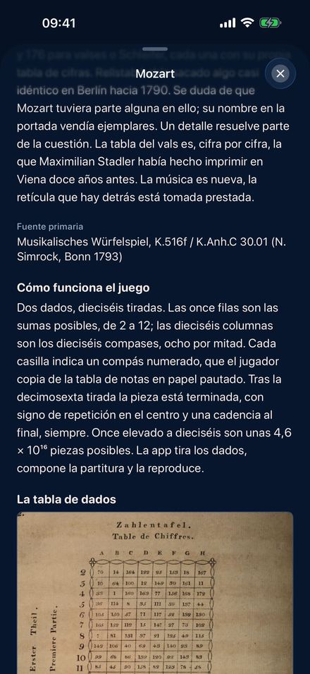
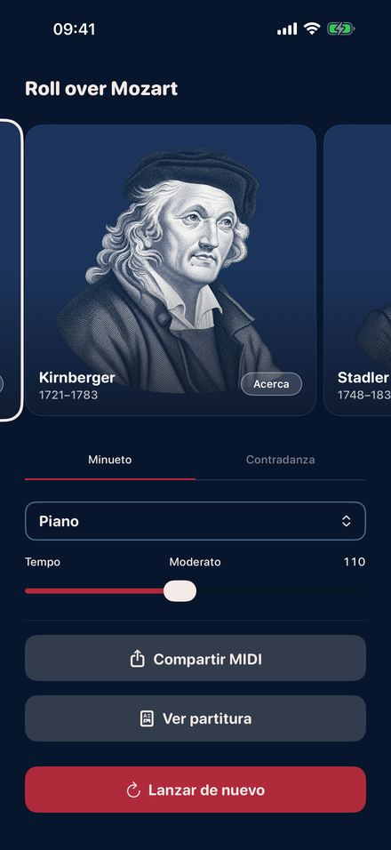

En el siglo XVIII se publicaron juegos impresos con los que cualquiera podía
componer sin saber leer una nota. Cada tirada señala un compás numerado en una
tabla. Dieciséis tiradas dan una pieza terminada, en la tonalidad correcta y con
una cadencia en regla al final. Roll Over Mozart interpreta cuatro de aquellos
juegos, compás a compás, siguiendo las tablas originales.
Muy pronto en la App Store.

Tira los dados

La partitura de tu tirada

La tabla original

Cuatro compositores
Cuatro juegos impresos
MozartEl Musikalisches Würfelspiel publicado bajo su nombre en Bonn en 1793: un minueto y una contradanza inglesa, 176 compases numerados cada uno, dos dados, dieciséis tiradas.
KirnbergerBerlín 1757, el más antiguo de todos. Un minueto con su trío a un solo dado, y una polonesa de 154 compases con dos.
StadlerViena 1781. Minueto y trío de un benedictino que trató de cerca a Mozart y a Haydn, impreso doce años antes de que el juego de Mozart adoptara su retícula de cifras.
C.P.E. BachSeis compases de contrapunto doble “sin conocer las reglas”. Cualquier voz superior encaja con cualquier voz inferior, y Bach cuenta la broma sin mover una ceja.
Qué puedes hacer
Tirar, y oírlo al instante.
Cambiar el instrumento y el tempo mientras suena la pieza.
Seguir la partitura de tu propia tirada, compás a compás, mientras suena.
Llevártela: partitura en PDF, o un archivo MIDI para cualquier programa musical.
Leer la historia de cada edición, con la tabla de dados original y las páginas de compases numerados.
Aquí no se inventa nada
Cada compás lo escribió el compositor y se imprimió en el siglo XVIII,
reproducido sin cambiar una nota. Los dados solo deciden el orden, tal como
estaba previsto. Es la música generativa más antigua que conocemos, doscientos
cincuenta años antes del primer chatbot.
Además
Once instrumentos, del piano y el clave al violín, la flauta y el órgano de
iglesia. Tempo de arrastrado a vertiginoso. Seis idiomas. Sin cuenta, sin
publicidad, sin rastreo, y funciona en modo avión. iPhone y iPad con iOS 26.2 o
posterior.